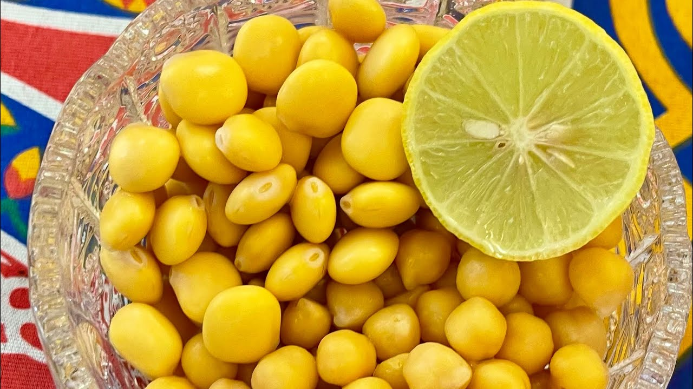

Termes

Description
Egyptian Termes، “ترمس”, or Lupini Beans is one of the most common, affordable, healthy, and delicious snacks in Egypt.
If life has treated you with a memorable walk along the river Nile, you must have seen the street vendors selling to passengers heaps of Lupini Beans wrapped in cute paper cones.
Ingredients
- 1 bag Lupini Beans, 14 ounces
- Water (enough to cover the Lupini Beans)
- 1/4 cup salt
- 3 tablespoons of lemon
- 1 teaspoon dry pepper flakes (optional), or Tobasco sauce
- 1/2 teaspoon of cumin (optional)
- 1 teaspoon of olive oil
Steps
- Soak the Lupini Beans in water for 18 hours. After soaking,
discard the water and rinse the beans with fresh tap water.
- Boil the Lupini Beans. Add the Lupini Beans in a wide and deep pan, filled with water.
Bring it to vigorous boil and let the Lupini Beans cook until they are puffed
and their color turns to vivid yellow.
- Soak the Lupini Beans in fresh water and change it daily with fresh water.
Always rinse the beans under tap water before adding them to the fresh water.
The numbers of days for which you soak the beans depend on the type of beans.
Therefore, you should taste the beans each day.
Just know that they are ready for consumption when the bitterness is completely gone.
- Prepare the brine. Add 4-5 cups of fresh water and 1/4 cup of kosher salt to a middle size, deep pan
and set it on middle-low heat on the stove top. Stir the salt to dissolve
and bring the the water-salt mixture to a boil.
Once all the salt granules dissolve into the water,
turn off the heat and let the water cool slightly.
Pickle the Lupini Beans. Add the Lupini Beans to a clean, sanitized glass jar.
Add the brine, olive oil, pepper flakes, and lemon. You can use it within an hour.
- Serve in bowls garnished with lemon quarters and with small plates to discard the skin.
- Store the Lupini Beans in the fridge. It can stay in the fridge for up to a month.